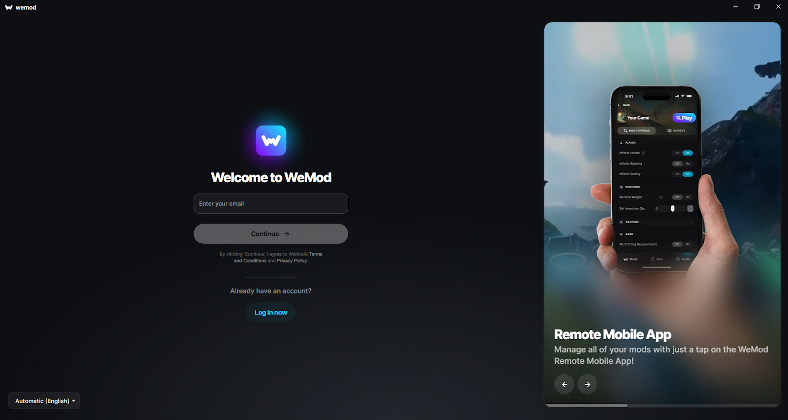
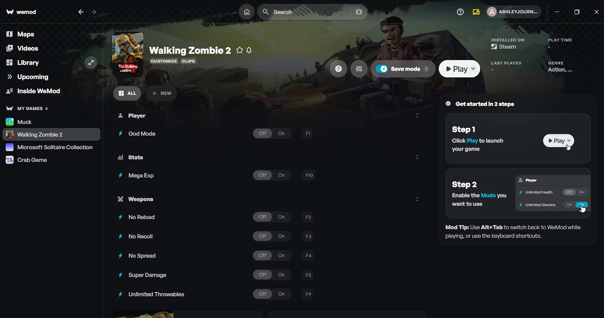

第一次用 WeMod？五分钟从零跑通，再也不用对着攻略按计算器
完全不碰技术术语带你上手 WeMod：它到底是什么、怎么装、怎么连游戏、哪些玩法新手最值得先试。
这篇能带你从完全不懂到用起来，不需要任何基础。
你可能听朋友提过、在论坛里见过截图，或者自己蹲通关刷到烦躁，搜"怎么调金币"搜到了这个名字——WeMod。别被那些花里胡哨的英文截图和"Pro 订阅"字眼吓退，这东西本质上是个给单机游戏开官方"练习模式"的桌面小工具。
它到底是干嘛的：一个生活化类比
想象一下你玩模拟人生，总在"做饭烧焦→去商店买食材→路上被车撞→重来"的循环里打转。你需要的不是删档，而是一个"暂停键"让你有心情好好玩剧情。WeMod官网 就是这个暂停键——它能让游戏里的某些数值按你设定的方式运行，比如血量不往下掉、子弹不用捡、钱花不完，或者直接跳到下一关。
专业点的说法它叫"游戏修改器（Trainer）"，但别紧张，这个词第一次出现你就当它是"游戏里的作弊开关面板"就行。它不会动你电脑里的任何游戏文件，运行时才附着到游戏进程上（可以理解成"插了个临时插件"），关掉就什么痕迹都没有。
如果你之前用过控制台命令，那 WeMod 就是"把控制台命令做成了带界面的开关"——不用背 god 是什么、不用按 F 打开输入框，点开就能切。
五分钟上手：从下载到第一次跑通
整个流程连装带试一遍，五分钟绰绰有余。
第一步，把安装包拿到。去官方下载拉一个安装程序，双击打开，跟着向导一路"下一步"就行。安装路径不用改，默认的 C 盘位置就好。装完会自动弹出登录界面，用邮箱注册一个账号（免费的），Google 登录也能用。

第二步，搜你的游戏。界面顶部有个搜索框，直接敲游戏名字就行——全名、常用缩写、系列名都能认出来。搜不到？别急，看后面"常见疑问"那部分，有四种原因和对应解法。
第三步，点进去，先把游戏开起来。这是很多新手踩的第一个坑：先在 WeMod 里点了 Play，再去开游戏，然后程序就卡住了或者附着失败。正确的顺序是反过来的——自己先把游戏启动，等到了能操作角色、能在里面正常移动的程度，或者至少进了主菜单，再 Alt+Tab 切回 WeMod，这时候点那个蓝色的 Play 按钮，程序会"挂"到已经跑起来的游戏进程上。

第四步，切修改开关。附着成功后，你会看到游戏页的修改列表里多了绿色的对勾。挑一个试试——比如"无限生命"，点一下，切回游戏挨打，血条稳稳不动，成了。
整个过程熟练之后就是：开游戏 → 进游戏 → Alt+Tab → 点 Play → 切开关。真正卡人的也就那一次"先开谁"的顺序。
上手后先玩这三个功能
第一次跑通之后，别一口气把所有开关都按亮——容易搞不清楚哪个改了什么。新手最值得先碰这三个点：
热键绑定：解放你的 Alt+Tab
每次都 Alt+Tab 切出去点开关，玩起来太打断节奏。WeMod 允许你给任意修改项绑一个自己习惯的键——鼠标悬停到修改项旁边，会冒出一个铅笔小图标，点一下，按你想分配的按键（比如 F2、Ctrl+H），就自动记住了。之后在游戏里直接按那个键，修改瞬间切换，屏幕角落会弹个小提示告诉你"开了/关了"。
挑键位的时候注意别跟游戏本身的操作冲突——很多游戏把 F1~F4 占了做技能栏，Ctrl+空格又是中文输入法切换。试试 Home、End、或者 Ctrl+Alt+ 这种组合，大多数游戏默认不会碰。而且热键是按游戏分别记录的，A 游戏里绑的 F2 到 B 游戏里不会生效，不会串。
游戏内悬浮窗：不用切屏也能改
这个功能是 Pro 订阅才有，但免费版也能体验——就是在游戏画面里贴了个半透明的小面板，不用 Alt+Tab 切出去就能开关修改。默认呼出键是 Alt+W，可以在设置里改。如果你的游戏里 Alt+W 有别的用处，改成一个你平时不会按的组合就行。
还有个小技巧：如果你觉得面板挡视线，可以在设置里调透明度，或者干脆关掉悬浮窗只用热键——两种方式随便选。
修改说明图标：别盲目开开关
每个修改项旁边都有两个小图标你得留意：ⓘ 信息图标和⚡ 闪电图标。悬停上去看一眼，就能知道这个修改"具体改了什么、在哪种状态下才工作、会不会自动保存"。比如有些制作类修改只会覆盖"普通装备"的强化，不会管传奇品质的——盲目开了发现没反应，就是没看说明的锅。
小白的三个常见疑问
这些问题官方文档里也反复提，我整理成大白话：
"为什么我搜不到自己想玩的游戏？"
四种原因。第一种就是库里还没有，但官方每周都在加新游戏，热门新作排队不会太久。第二种是这款游戏被反作弊挡住了——技术上没法提供修改，不是你操作有问题。第三种是它在数据库里用了别的名字，试试英文名、系列名、加个"Definitive Edition"后缀再搜一次。第四种是开发中，已经排上队列了但还没做好，这时候可以 Boost 投票把你的诉求顶上去，优先级会往前提。想更系统地查支持范围和搜索技巧，可以翻一下WeMod文档的兼容性章节。
"修改开了几秒自己关掉，或者点了没反应？"
八成是启动顺序反了。回到"五分钟上手"那部分的第三步，老老实实先开游戏、等加载完、再回来点 Play。其次要确认你在单机模式里——联机对战时 WeMod 自动关，这是安全边界。如果还是自动关，查一下是不是游戏大版本刚更新过（训练器没跟上）、或者你同时开了别的修改工具（冲突了）。
"免费版和 Pro 版有什么区别？值不值得买？"
免费版的核心功能——搜索游戏、附着、开修改、绑热键——全都能用。Pro 多出来的东西主要是：游戏内悬浮窗（不用切屏）、自动保存修改开关状态（下次打开记忆上次勾选）、优先支持新游戏。如果你只是偶尔调调金币、跑一遍剧情，免费版完全够用。如果你是重度玩家、不想每次都手动勾开关，可以考虑订阅，月付年付都有。
接下来往哪走？
上面那套流程能覆盖你第一次用 WeMod 的 90% 场景。想玩得更顺、遇到奇奇怪怪的问题也能自己排查——
最后提醒一句：WeMod 的训练器只对单机模式生效，联机对战时自动关闭，别想着用它在 PVP 里占优势，官方这道红线盯得很死。
祝你玩得开心，再也不用为刷资源耽误剧情体验。
如果你在使用过程中遇到找不到游戏、连接不上、修改自动失效等问题，可以去查完整的中文文档。这款工具的官方客户端、安装包、详细文档在三个代码仓库里都能找到备份，国内访问也方便：GitHub、Gitee、GitCode，搜"APK 仓库"加软件分类就能定位到。